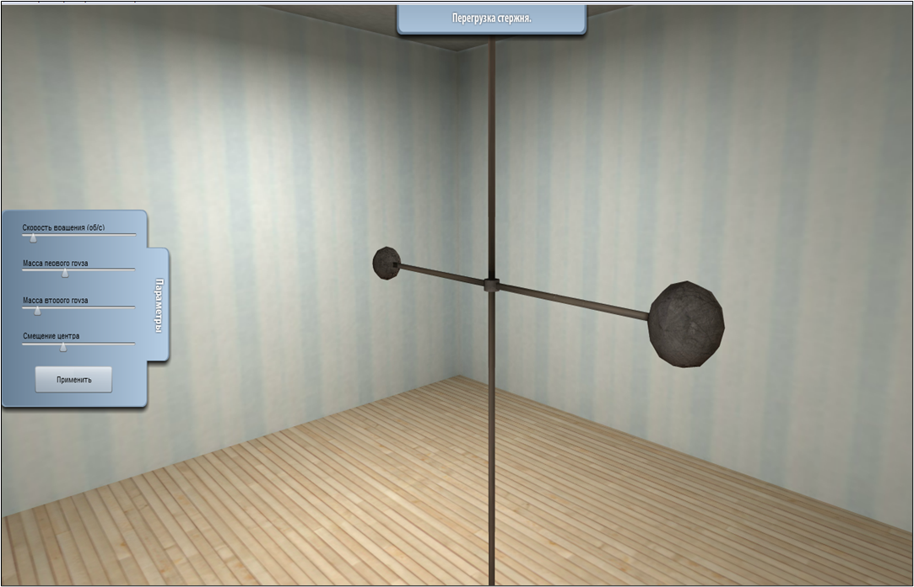
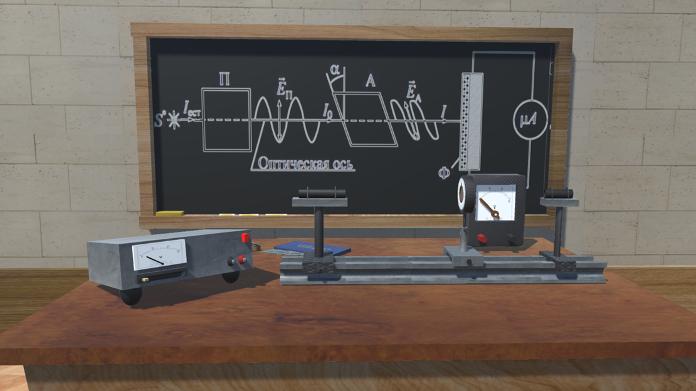

ИМИТАЦИОННОЕ МОДЕЛИРОВАНИЕ
Моделирование является одним из основных инструментов исследования динамических объектов, процессов и явлений в живой и неживой природе[cite: 18]. В общем случае методы моделирования ориентированы на решение практических задач с целью получения оптимального решения[cite: 19].
Реализация методов математического моделирования должна включать следующие этапы:
- Формализация исходной проблемы.
- Построение математической модели.
- Решение модели.
- Проверка адекватности модели.
- Реализация решения.
Однако всегда существует класс объектов, для которых не разработаны аналитические модели, либо не разработаны математические методы решения полученной модели[cite: 26].
МЕТОДЫ ИМИТАЦИОННОГО МОДЕЛИРОВАНИЯ
Под термином имитационное моделирование понимают метод исследования, при котором изучаемая система заменяется моделью, с достаточной точностью описывающей реальную систему, с которой проводятся эксперименты с целью получения информации об этой системе[cite: 28]. Различие между математической и имитационной моделями заключается в том, что в имитационной модели отношение между «входом» и «выходом» модели может быть явно не задано[cite: 29].
К имитационному моделированию прибегают, когда:
- дорого или невозможно экспериментировать на реальном объекте[cite: 32];
- невозможно построить аналитическую модель поведения системы[cite: 33];
- необходимо просто имитировать поведение системы во времени для понимания ее сущности[cite: 34];
- необходимо создать имитационую модель установки для обучения работы персонала работе на реальной установке[cite: 35].

Рис 1. 3D-симулятор для изучения явления перегрузки стержня [cite: 49]ПРИНЦИПЫ ИМИТАЦИОННОГО МОДЕЛИРОВАНИЯ
Имитационное моделирование позволяет имитировать поведение системы во времени, причем временем в модели можно управлять: замедлять в случае с быстропротекающими процессами и ускорять для моделирования систем с медленной изменчивостью[cite: 41].
Имитационная модель рассматривается как специальная форма математической модели, в которой декомпозиция системы на компоненты производится с учетом структуры объекта, а поведение системы иллюстрируется динамическими графическими образами[cite: 42, 43, 45].

Рис 2. 3D-симулятор для изучения явления поляризации света [cite: 50]ЗНАЧЕНИЕ ИМИТАЦИОННОГО МОДЕЛИРОВАНИЯ
Имитационные модели значительно гибче в представлении реальных систем, чем их математические «конкуренты»[cite: 52]. При имитационном моделировании исходная система рассматривается на элементном уровне, в то время как математические модели стремятся описать системы на глобальном уровне[cite: 53]. Зачастую зависимости выражаются табличными и логическими соотношениями, правилами «если – то»[cite: 55].